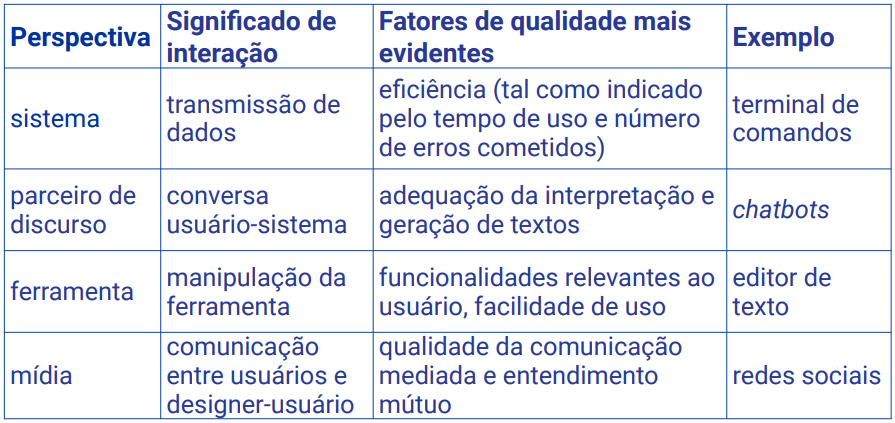

Disciplinas
INTERFACE HUMANO-COMPUTADOR-T01-2024-2 Concluído
Materiais
Vídeo 1 - [UFMS Digital] Interface Humano-computador - Módulo 1 - Unidade 2 sendprof.ª ministrante: Lucineide Rodrigues da Silva
Conteúdo
Conceitos fundamentais de IHC (Interação Humano Computador)
Situação típica de uso.
- Contexto de uso
- Objetivo da pessoa
- Processo de interação
- Sistema
- Interface
Contexto de uso.
- É a situação do usuário, que desempenha um papel significativo em sua interação com o sistema. É influenciada pelo contexto em que ele utiliza o sistema, pelo momento em que isso ocorre e pelo ambiente físico, social e cultural em que a interação acontece.
Interação.
- Sequência de estímulos e respostas;
- Operação de máquina:
- Norman (1986 apud Barbosa; Silva, 2010) caracterizou como um processo em que o usuário concebe uma intenção, elabora um plano de ação, interage com a interface, percebe e compreende a resposta do sistema e, posteriormente, avalia se alcançou seu objetivo.
- Comunicação com/por meio da máquina:
- Para Souza (2005), trata-se de um processo de comunicação entre pessoas (incluindo o designer e os usuários), mediada por sistemas computacionais.
Perspectivas de interação.
Interface.
- Meio de contato entre usuário e sistema;
- Moran (1981 apud Barbosa; Silva, 2010) define como a porção do sistema com a qual o usuário mantém contato físico (motor ou perceptivo) ou conceitual durante a interação.
Affordance.
- São as características de um objeto que mostram aos usuários quais são as operações e manipulações possíveis de se fazer com ele (Norman, 1999);
- Cuidado com falsas affordances!

Qualidade de uso.
- Critérios de qualidade:
- Usabilidade;
- Experiência do usuário;
- Acessibilidade;
- Comunicabilidade.
- Nielsen (2012) especifica que usabilidade refere-se a como a interface tem facilidade de uso e composta por:
- Facilidade de aprendizado;
- Facilidade de recordação;
- Eficiência;
- Segurança no uso;
- Satisfação do usuário.
- Envolve aspectos subjetivos do usuário:
- Como o uso do sistema afeta sentimentos e emoções do usuário
- Satisfação, prazer, diversão, atração, motivação, estética, cansaço, frustração…
- Podem ser negativos ou positivos. É pessoal.
- Para Melo e Baranauskas (2005) é proporcionar para usuários com diferentes necessidades o acesso à informação e à interação;
- As limitações podem ser físicas, ou mentais, ou de aprendizado;
- Pessoas com deficiência visual, auditiva, motora;
- Pessoas com deficit de atenção, daltonismo, autismo;
- Idosos.
Comunicabilidade.
- De Souza (2005) define que está relacionada ao quão bem uma interface comunica ao usuário as intenções do designer;
- A quem se destina o sistema?
- Para que ele serve?
- Qual a vantagem de utilizá-lo?
- Como ele funciona?
- Quais são os princípios gerais de interação com o sistema?
Qualidade de uso
Envolve critérios distintos e interligados;
Nem sempre é possível satisfazer todos os critérios de qualidade de uso;
É importante definir quais critérios devem ser priorizados no design de IHC.
Referências:
BARBOSA, Simone Diniz Junqueira; SILVA, Bruno Santana da. Interação Humano-Computador. Rio de Janeiro: Elsevier, 2010. Capítulo 2.
BENYON, David. Interação Humano-Computador. 2. ed. São Paulo: Pearson, 2011. ISBN 9788579361098. Capítulo 4. p. 49-56 (até o item 4.4) [versão PDF]. Disponível na Biblioteca Digital da UFMS.
MELO, Amanda Meincke; BARANAUSKAS, M. Cecília C. Design e Avaliação de Tecnologia Web-acessí vel. In: CONGRESSO DA SOCIEDADE BRASILEIRA DE COMPUTAÇÃO, 25.; JORNADAS DE ATUALIZAÇÃO EM INFORMÁTICA, 2005, São Leopoldo-RS, 22 à 29 de julho. Anais [...] p. 1500-1544. Disponível em: https://link.ufms.br/cOMn2. Acesso em: 29 set. 2023.
NIELSEN, Jackob. Usability 101: Introduction to Usability. [S.l.]: Nielsen Norman Group, 2012. Disponível em: https://link.ufms.br/p0npg. Acesso em: 28 set. 2023.
NORMAN, Donald A. Affordance, conventions, and design. Interactions, v. 6, n. 3, p. 38–43, maio 1999. Disponível em: https://link.ufms.br/bUOqr. Acesso em: 29 set. 2023.
SOUZA, Clarisse Sieckenius de. The Semiotic Engineering of Human-Computer Interaction. [S.l.]: The MIT Press, 2005. Disponível em: https://link.ufms.br/jM2tD. Acesso em: 28 set. 2023.